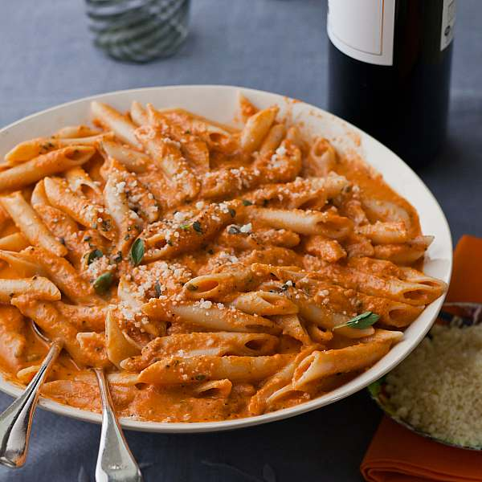

Penne Alla Vodka

A very delicious and creamy style of pasta, Penne alla Vodka!
There are many different kinds of pasta dishes that have stood the test of time.
However, one of the the most popular and delicious pasta dishes originating from Italy
may be the best of all! (debatable) This creamy pasta dish can also be prepared with
a variety of different proteins to enhance flavor!
Ingredients
- San Marzano tomatoes (canned)
- Extra virgin olive oil
- Yellow onion
- Garlic
- Salt and pepper
- Vodka
- Red pepper flakes
- Heavy cream
- Fresh basil and oregano
- Shredded parmesan cheese
- Penne pasta
Steps
- Boil water
- Heat oil in a separate pan over medium heat
- Saute onions for 4-5 minutes in pan , then add garlic and red pepper flakes and saute for 1 additional minute
- Add san marzano tomatoes, vodka, salt, and pepper to the pan
- Bring pan to a simmer until strong alcohol scent has cooked off (should be roughly 15 minutes)
- Start to cook the pasta (reserve 1/2 cup of pasta water)
- Mix cream, herbs and parmesan into the pan sauce
- Toss vodka sauce and penne in pan, add a little pasta water as needed
- When penne is thoroughly coated, garnish with basil
Return to Homepage